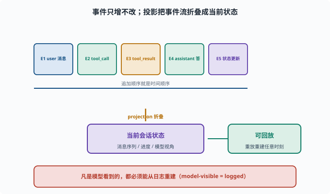

拆解会话日志：读懂 append-only 日志
目标：在 packages/core/session 里看懂会话日志的结构与事件。读完这一页，你能识别一条会话事件、理解"model-visible ⟺ logged"如何落实到代码。
会话日志的价值（回顾）
此前讲过追溯硬规则（09-05）：凡是模型看到的都能从日志重建。 这一页我们把这条规则"拆进代码"。
session 包在做什么
packages/core/session 负责：
持久化会话数据（append-only）
事件模型：SessionEvent
投影（projection）：从事件推断会话状态
标题、遥测等附属能力
核心是一个"事件流"：每个动作（消息、工具、模型请求）作为一条事件被追加。
projection（投影）：从事件到状态
**projection（投影）**指"把只增的事件流折叠成当前状态"的运算：事件本身只记录"发生了什么"，而 agent 每一步需要的是"现在消息序列长什么样"。deepseek-harness 里这个函数叫 deriveMessages()——它按顺序折叠事件，产出模型要看到的消息列表；同一份日志可以被反复折叠出任意历史时刻的状态。
一条 SessionEvent 长什么样
每条事件都是一个带类型标记的信封（真实字段，见 packages/core/session/src/types.ts）：
type：事件的类型（如 turn/start、user/message、tool/result）
seq：会话内单调递增的序号（重放顺序的保证）
time：Unix 毫秒时间戳
data：该类型自己的载荷（消息文本、工具参数、返回值等）
真实的事件类型词汇表包括：turn/start、turn/end、step/start、step/end、user/message、assistant/chunk（流式片段）、assistant/message、tool/call、tool/result 等。
读代码时关注：事件如何被"追加"（session.append）、如何被读取、如何投影成会话状态。
"model-visible ⟺ logged" 怎么落地
一条硬规则在代码里体现为：
每次向模型发送新输入前后，都要追加一条对应事件
（如 user/message、assistant/message、tool/result 都有专属事件类型）
这样 deriveMessages 折叠日志，就能重建"模型看到的那条完整消息"
工程上"该不该加事件"的判断标准很简单：如果这条输入会被模型看到，就必须能由日志重建。
用 rg 感受
rg -n "SessionEvent|append|deriveMessages|message" packages/core/session/src
重点看：
事件追加的入口（session.append）
事件如何被序列化/反序列化
deriveMessages 如何把事件流投影成"当前消息序列"（模型视角）
事件流与"可回放"
因为日志 append-only，可以：
从头到尾重放事件 → 重建任何时刻的会话状态
拉出"某时刻模型视角" → 排查为何那样做（[09-09](../09-agent-architecture/09-09-observability.md)）
这就是"可追溯"与"调试"的源码基础。

上图把"事件流"和"投影"两件事拼在一起看：顶部一排 E1..E5 是按顺序追加的只增事件，底部那条 projection 折叠 的箭头把它们浓缩成"当前会话状态"（消息序列、进度、模型视角）。右端的"可回放"则说明同一份事件流还能被反复重放，重建任意时刻的状态。事件源与投影分离，正是"日志能回答模型当时为什么这么做"的工程根基。
思考题
- session 包主要负责什么？
- 一条 SessionEvent 通常包含哪些字段？
- "model-visible ⟺ logged"如何在代码里判断"要不要加事件"？
- append-only 为什么支持"回放重建状态"？
- projection 的作用是什么？
参考答案
- 持久化会话数据（append-only）、事件模型 SessionEvent、投影（projection，如
deriveMessages）推断会话状态、标题/遥测等。 - type（事件类型，如 turn/start、user/message、tool/result）、seq（会话内单调序号）、time（Unix 毫秒时间戳）、data（该类型的载荷）等。
- 判断标准：该输入如果会被模型看到，就必须能从日志重建，因此要先追加对应事件；"看不到的"可以不记，但"看得到的"必须记。
- 因为事件只增不改、顺序固定，从头重放事件流就能按时间重建任何时刻的会话状态，从而支持追溯与回放。
- projection（如
deriveMessages）把 append-only 的事件流"折叠"成当前的会话状态（如当前消息序列），供 agent 读取与继续。
下一步
- 想拆解 agent 循环怎么消费会话 → 10-04 拆解 Agent 循环。
- 想从零写一个工具 → 10-05 写一个工具。
- 想复习追溯硬规则 → 09-05 会话日志与可追溯。